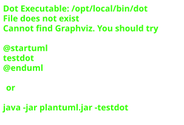

Architecture
Here we present the class hierarchies of Ontolearn.
Knowledge Base organisation

The Knowledge Base keeps the OWL Ontology and Reasoner together and manages the OWL Hierarchies. It is also responsible for delegating and caching instance queries and encoding instances.
Learning Algorithms
There may be several Concept Learning Algorithms to choose from. Each may be better suited for a specific kind of Learning Problem or desired result.
Heuristics
Heuristics are an abstraction to guide the concept search process. The included CELOE Heuristic takes as basis the Quality function and then adds some weights, like penalties for extending the length of a concept or for repeatedly searching the same position in the search space. Other heuristics can be invented and tested.
Refinement Operators
Refinement operators suggest new concepts to evaluate based on a given concept. Ultimately, the refinement operator decides what Description Logics language family the learning algorithm will be able to cover. The included modified CELOE refinement will iteratively generate ALC concepts by generating all available atomic classes and properties, and combine them with ⊓, ⊔, ¬, ∀ and ∃, and successively increase their length. The length based refinement will intuitively do the same but immediately go to a specific length instead of searching the concepts by increasing length.
Learning Problem types
Learning Problems encode all information pertaining to the classification task, i.e. the positive examples (that should be covered by the learning result) and the negative examples (that should not be covered by the learning result).
Search trees and nodes
![package ontolearn.abstracts {
abstract AbstractNode
}
package ontolearn.abstracts {
abstract AbstractOEHeuristicNode
}
package ontolearn.search {
class Node
}
package ontolearn.search {
class OENode
}
package ontolearn.search {
class LBLNode
}
package ontolearn.abstract {
abstract LBLSearchTree
}
package ontolearn.search {
class SearchTreePriorityQueue
}
OENode <|-- LBLNode
AbstractNode <|-- Node
AbstractNode <|-- OENode
AbstractOEHeuristicNode <|-- OENode
LBLSearchTree <|-- SearchTreePriorityQueue](../_images/plantuml-18df5cfca514b77d3bf7ec3b9b598f10409e7927.svg)
Nodes are tuples of concept and (typically) quality and other related measures or information, and are used in the search process or possibly to present the algorithm results.
OWL Hierarchies
Hierarchies order their taxonomies into a sub- and super-kind relation, for example sub-classes and super-classes.
Quality Functions
You can choose one quality function which will be the quality of a Node in the search process. The way the quality is measured typically influences the heuristic and thus the direction of the search process.
Component architecture
![package ontolearn.base_concept_learner {
abstract BaseConceptLearner << AbstractNode >>
}
package ontolearn.concept_generator {
class ConceptGenerator
}
package ontolearn.abstracts {
abstract AbstractKnowledgeBase
}
package ontolearn.abstracts {
abstract AbstractLearningProblem
}
package ontolearn.abstracts {
abstract BaseRefinement << AbstractNode >>
}
package ontolearn.abstracts {
abstract AbstractScorer
}
package ontolearn.abstracts {
abstract AbstractHeuristic << AbstractHeuristicNode >>
}
package owlapy.model {
abstract OWLOntology
}
package owlapy.model {
abstract OWLReasoner
}
OWLReasoner *-- OWLOntology
AbstractKnowledgeBase *-- OWLOntology
AbstractKnowledgeBase *-- OWLReasoner
AbstractKnowledgeBase *-- ConceptGenerator
OWLReasoner -* ConceptGenerator
BaseRefinement *-- AbstractKnowledgeBase
BaseConceptLearner *-- AbstractKnowledgeBase
BaseConceptLearner *-- BaseRefinement : refinement_operator
BaseConceptLearner *-- AbstractScorer : quality_func
BaseConceptLearner *-- AbstractHeuristic : heuristic_func](../_images/plantuml-82b19300669ca7faece796dfc4e00f4cf6c3e12c.svg)
Here you can see how the components depend on each other. All of these components are required in order to run the concept learning algorithm.